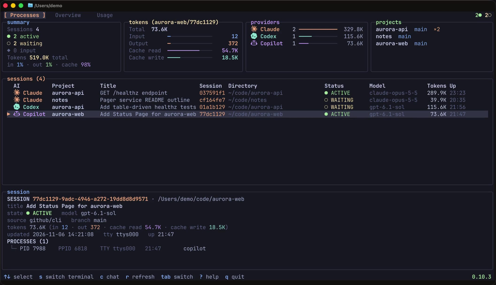

Your coding agents. In your menu bar, terminal, and browser.
See which coding agents are working or need attention, read their latest replies, and check token usage. The terminal dashboard is free and open source: keep launching your agents as usual, then run firekeeper beside them. No account, server, or wrappers required. Firekeeper Menu Bar on macOS and the web dashboard are licensed, opt-in offerings. Use the web dashboard in free local mode, self-host Firekeeper Server, or use the Hosted dashboard we operate.
 FirekeeperPaused
FirekeeperPaused
No live sessions match.
How it works
Keep launching agents the way you already do. Firekeeper watches them; it does not wrap them. Start with the free terminal dashboard.
Start agents as usual
Claude Code, Codex, GitHub Copilot CLI, Kimi Code, OpenCode, Gemini CLI, or Cursor CLI, with their normal commands and sign-in.
firekeeper Open the terminal dashboard beside them
In another terminal, from any directory, run
firekeeper. Sessions show up within a couple of seconds.c Read the reply, then jump back
Press c to follow the conversation live. Press s to focus that agent's terminal (Ghostty, Terminal.app, and iTerm2 on macOS; on Windows the window is raised and you pick the tab). Reply and approve tool calls in the agent's own terminal.
The same sessions can also appear in two licensed views: Firekeeper Menu Bar on macOS, and the web dashboard in a browser (free local mode, self-hosted Firekeeper Server, or the Hosted dashboard). Neither is required to use the terminal dashboard.
- Works with
- Claude Code
- Codex
- GitHub Copilot CLI
- Cursor CLI
- Gemini CLI
- OpenCode
- Kimi Code
Three views. Only the terminal is free.
Terminal dashboard
Free and open source. Run firekeeper for a keyboard-driven list of every agent, with live replies and usage.
Firekeeper Menu Bar
Licensed, macOS. See which agents are working or need attention, and jump to their terminals, from the menu bar.
Web dashboard
Licensed. Browse, search, and chart reported history in a browser. Run it in free local mode on this machine, self-host Firekeeper Server (a license is required for remote or shared use), or use the Hosted dashboard we operate.
See what is running
Every agent, one list. The terminal dashboard finds your agent processes, groups each runtime with its children, and shows state, model, working directory, Git branch, and tokens. It refreshes every two seconds.
States (Active, Waiting, Needs input) describe the latest event Firekeeper can see, not ground truth. Not every agent exposes every state.
- Active
- Waiting
- Needs input
- ↑↓ Select
- Enter Expand
- Tab Switch view
- ? Lists every key

Read the reply. Jump to the terminal.
No more tab hunting. Select a session and press c to read available prompts and replies, following new messages live. Press Esc to return. Press s to focus the terminal holding that session, then do the work there.
On macOS, Firekeeper Menu Bar is a licensed way to see those same states and jump to the terminal without opening the terminal dashboard.
Understand usage
Local totals and provider limits, side by side. Compare local token history by model for Codex, GitHub Copilot CLI, Kimi Code, and Claude Code. See provider limits where the agent makes them available, separately from local totals. Each session also gets a per-session breakdown: input, output, cache read, and cache write.
Local token totals can be incomplete and are not an account-wide bill. Understand the data sources.
Also in the Firekeeper CLI
Nothing to configure for the terminal dashboard
No login, server, or daemon. Quitting Firekeeper leaves your agents running.
Read-only on provider data
Firekeeper never changes your agents' databases, logs, or launch commands.
Ignore whole repos
A repository containing .firekeeper-ignore, or an excluded directory, is never read.
Sessions as JSON
firekeeper snapshot --json prints every discovered session for your own scripts. firekeeper usage --json prints quota windows where a provider reports them.
Keys for everything
Tab switches Processes, Overview, and Usage. ? lists every key. q quits.
Verified installs
The install scripts check the binary against the release's SHA-256 checksums. No sudo or admin rights.
Session HTML export
With Firekeeper Server installed locally, press e in the chat view to save a standalone HTML page. No license key, and nothing is uploaded.
Seven agents, one view
Process discovery works without any integration. Each provider also has an adapter that reads its local session data, read-only.
| Agent | Process discovery | State & metadata | Usage tab | Optional transcript upload |
|---|---|---|---|---|
| Codex | Yes | Yes | Limits and history | Yes |
| GitHub Copilot CLI | Yes | Yes | Local history and plan details | Yes |
| Claude Code | Yes | Yes | Limits and token history | Yes |
| Kimi Code | Yes | Metadata | Token history | Yes |
| OpenCode | Yes | Yes | No | Yes |
| Gemini CLI | Yes | Yes, no Needs input | No | Yes |
| Cursor CLI | Yes | Yes, no Needs input | No | Yes, no timestamps or tokens |
States describe the latest event Firekeeper can see, not ground truth. Provider data formats can change between CLI releases, and adapters evolve with them. macOS is the main target; Linux is best effort; Windows is supported with limits and has had the least real-world use. Firekeeper Menu Bar is macOS only.
Stay local by default. Add licensed views only if you need them.
The terminal dashboard is complete on its own and uploads no conversations. Licensed, opt-in offerings sit beside it:
- Firekeeper Menu Bar (macOS): watch sessions from the menu bar. A license is required for full use.
- Web dashboard, three ways:
- Free local mode: you run Firekeeper Server on this machine, on loopback, for one user, with no license key. Every dashboard feature works. It will not bind to a public address or serve other accounts until you add a license.
- Self-hosted Firekeeper Server: you run the web dashboard on a server you control. A Personal, Team, or Enterprise license is required for remote or shared use.
- Hosted dashboard: we run the web dashboard for you at dashboard.firekeeper.ai. Buy a license, open the signup link we email to the license address, sign in, then run
firekeeper login. See the Hosted dashboard section below.
Uploading history is a separate workflow: backfill and the background reporter read local history, redact it on your machine, and send it only to the server you use: Firekeeper Server you run, or the Hosted dashboard. Preview first with firekeeper backfill --all --dry-run; it uploads nothing. Redaction is best effort, and whoever operates the server can read what is uploaded. Reporting guide.
Hosted dashboard
Want a browser view without running a server? The Hosted dashboard is the web dashboard, operated by Lucky Daisy, at dashboard.firekeeper.ai.
The terminal dashboard stays free, local, and open source. Nothing is uploaded until you opt in. There is no open sign-up and no request-access form.
How to get access
Buy a license
Choose Personal, Team, or Enterprise in Pricing.
Check your email
Your signup link is sent to the address the license is registered to.
Sign in
Sign in to the Hosted dashboard with that link.
Run
firekeeper loginRun it on this machine, then choose which agents to report. Preview first with
firekeeper backfill --all --dry-run.
Already have an account? Sign in at the Hosted dashboard, then run firekeeper login on this machine if it is not linked yet.
Choose how you use the web dashboard
Free local mode
You run Firekeeper Server on this machine only, with no license key. One user, loopback, every dashboard feature. No Hosted account required.
Self-hosted Firekeeper Server
You run the web dashboard on a server you control. A Personal, Team, or Enterprise license is required for remote or shared use.
Hosted dashboard
We run the web dashboard for you. After you buy a license, we email a signup link to the address the license is registered to. Sign in with that link, then run firekeeper login.
firekeeper login, with no --server, links this machine to the Hosted dashboard. Preview a backfill with --dry-run before anything is uploaded. Redaction is best effort; as the operator, Lucky Daisy can read what you send.
There is no separate published Hosted plan or SLA; access follows a purchased license. The license key is emailed within one business day. The current Hosted Instance terms still describe early-access service with no availability, support, or data-retention commitment, and say data may be wiped at any time without notice. See the terms.
Who it's for
Firekeeper is for people who already run coding agents in the terminal, and especially for people who run more than one at a time.
Individual developers
You juggle Claude Code, Codex, Copilot, or other agent CLIs across projects and want one list instead of a pile of tabs. The terminal dashboard is enough, and it is free.
macOS users who want that list in the menu bar
That is Firekeeper Menu Bar, a licensed offering, not part of the open-source CLI.
People who care about usage
You want local token history next to the provider limits you already pay for, without treating Firekeeper's numbers as a bill.
People who want a browser view without operating a server
That is the Hosted dashboard at dashboard.firekeeper.ai. After you buy a license, we email a signup link to the address the license is registered to. It is not the free terminal dashboard, and it is not a self-hosted Firekeeper Server.
Teams and organizations
You want a shared web dashboard of reported sessions on a server you control. That is self-hosted Firekeeper Server, with a Team or Enterprise license: not the open-source CLI, and not the Hosted dashboard.
Operators who need to stay local
If transcripts should not leave the machine, use only the Firekeeper CLI. You never have to turn reporting on.
It is not a new way to launch agents, not a terminal multiplexer, and not a hosted agent runner.
Privacy, in plain terms
The terminal dashboard reads provider data locally and uploads no conversations. Provider usage lookups and release checks can contact the network.
Opt-in per agent
An unconfigured report or background reporter sends nothing. You name each agent you allow.
Redacted first
Every event passes through redaction before it leaves the machine.
You pick the destination
Uploads go only to the server you use (Firekeeper Server you run, or the Hosted dashboard) over HTTPS unless it is on this machine, with a token bound to this machine. firekeeper login with no --server targets the Hosted dashboard.
Plain talk: redaction is best effort, and whoever operates a server can read what is uploaded. Read what is uploaded and what is not caught before you turn uploads on.
Install the free terminal dashboard
All releasesThese commands install only the Firekeeper CLI. They do not install Firekeeper Menu Bar or sign you up for the Hosted dashboard.
macOSHomebrew · recommended
brew install firekeeper-ai/tap/firekeeperUpgrade later with brew upgrade firekeeper. No Homebrew? Use the macOS / Linux script below.
macOS / LinuxInstall script
curl -fsSL https://raw.githubusercontent.com/firekeeper-ai/firekeeper/main/install.sh | shInstalls to ~/.local/bin without sudo and checks the binary against the release's SHA-256 checksums. Command not found?
WindowsPowerShell 5.1 or 7
irm https://raw.githubusercontent.com/firekeeper-ai/firekeeper/main/install.ps1 | iexInstalls to %LOCALAPPDATA%\Programs\firekeeper, adds it to your user PATH, needs no administrator rights. Binaries are not code-signed. s raises the terminal window but not the tab. What differs on Windows.
From sourceGo 1.26+
go install github.com/firekeeper-ai/firekeeper@latestBuilds from source report their version as dev and never check for updates.
firekeeper --versionfirekeeper in another terminalFirekeeper Menu Bar (macOS, licensed)
Firekeeper Menu Bar is a separate, licensed macOS app. It is not part of the open-source CLI and is not installed by the commands above. A license is required for full use. About Firekeeper Menu Bar.
The script commands download and execute code. Prefer to inspect first? See verification, version pinning, and manual installation. Read the installation steps without the command pills.
Pricing
The Firekeeper CLI and terminal dashboard are free and open source, with no subscription. Firekeeper Menu Bar and the web dashboard are licensed, opt-in offerings. Firekeeper Server, which provides the web dashboard, is also free in free local mode on your own machine. For remote or shared use of a self-hosted web dashboard, and for Firekeeper Menu Bar, pick a license.
The prices below are the published license prices. They cover self-hosted Firekeeper Server beyond free local mode. Hosted dashboard access is granted after a license purchase, through a signup link emailed to the address the license is registered to. There is no separate published Hosted plan, and no open sign-up.
Free
Firekeeper CLI
- Terminal dashboard for seven agent CLIs
- Local chat history and usage, plus the other local CLI tools
- Open source, Apache 2.0
- No license key, account, or server
- Does not include Firekeeper Menu Bar or remote/shared web dashboard use
Personal
Web dashboard for one
- Firekeeper Server beyond free local mode, for one seat
- A year of updates included
- Then $29 a year for updates
Team
Shared, self-hosted
- $144 per seat a year, billed annually
- 3-seat minimum
- Shared web dashboard you host
- Monthly billing? Talk to us
Enterprise
For larger organizations
- Up to 50 seats
- Data processing agreement
- Source review under an NDA
Prices are in US dollars and exclude tax. Payment is handled by Stripe. After you buy, your license key is emailed to you within one business day. Full refund within 14 days: see the refund policy and the license terms.
Design partners: run a free 60–90 day pilot, then pay half price for the first year. In return we ask for feedback, a case study, and your logo. Talk to us.
The command line
Plain firekeeper opens the terminal dashboard. Everything else is an explicit subcommand. These commands are the Firekeeper CLI, which is free; they do not launch Firekeeper Menu Bar.
Always local (Firekeeper CLI)
firekeeperTerminal dashboard: Processes, Overview, and Usagefirekeeper snapshot --jsonPrint discovered sessions as JSONfirekeeper usage --jsonPrint quota windows and reset times, where a provider reports themfirekeeper config showMerged configuration, token maskedOpt-in reporting (still the Firekeeper CLI; talks to a server only when you ask)
firekeeper loginLink this machine with a browser approval. With no --server, this targets the Hosted dashboard at https://dashboard.firekeeper.ai. Pass --server URL to link to a self-hosted Firekeeper Server instead.firekeeper reportUpload the sessions running right nowfirekeeper backfill --allImport past sessions from local historyfirekeeper daemon installReport in the background from loginfirekeeper whoamiServer, account, and machine this one reports asfirekeeper logoutRevoke and remove this machine's tokenLicensed product launcher
firekeeper serveStart Firekeeper Server (the web dashboard). Free local mode with no key; a license key for remote or shared use.FAQ
Is Firekeeper free?
The terminal dashboard (the Firekeeper CLI) is free and open source (Apache 2.0). Firekeeper Menu Bar and the web dashboard are licensed, opt-in offerings. The web dashboard is also free in free local mode on your own machine (loopback, one user). Remote or shared use of a self-hosted web dashboard, and access to the Hosted dashboard, need a purchased license (Personal, Team, or Enterprise). There is no separate published Hosted price, and no open Hosted sign-up.
Do I need an account or a server to use it?
No. Run firekeeper next to your agents. You only need a license for Firekeeper Menu Bar, or a server (one you run, or the Hosted dashboard) if you opt in to the web dashboard or to uploading history.
What is the Hosted dashboard?
The Hosted dashboard is the web dashboard operated by Lucky Daisy at dashboard.firekeeper.ai. It is not the free terminal dashboard, and it is not self-hosted Firekeeper Server. After you buy a license, we email a signup link to the address the license is registered to. Open that link, sign in, then run firekeeper login and opt in to reporting the agents you choose. Nothing is uploaded until you do. There is no open sign-up and no request-access form. Existing customers can sign in.
I bought a license but didn't get a signup link.
The link is sent to the email the license is registered to, the same address on your order. Check that inbox and spam, and allow up to one business day (the time already published for the license-key email). If it still has not arrived, use the contact form.
Will it change how I launch my agents?
No. Start Claude Code, Codex, Copilot CLI, and the rest with their usual commands. Firekeeper does not wrap them, replace them, or send them messages. Reply and approve tool calls in the agent's own terminal.
Does Firekeeper upload my transcripts?
Not unless you opt in. The terminal dashboard reads local data only. Reporting commands can upload session metadata and transcripts to a server you use, after best-effort redaction. Preview with --dry-run. The operator of that server can read what you send.
What does a license actually unlock?
A license is for the opt-in products, not for the Firekeeper CLI. The CLI is never license-gated. Firekeeper Menu Bar is a licensed macOS app. Firekeeper Server's web dashboard already runs in free local mode on this machine without a key; a valid Personal, Team, or Enterprise key lets you self-host it for remote or shared use: bind it beyond loopback, and use accounts and tokens. The Hosted dashboard is the same web dashboard, run by us rather than by you; access comes with a purchased license, through a signup link emailed to the license address, not through open sign-up.
Which platforms are supported?
macOS (Apple Silicon and Intel) is the main target. Linux (amd64 and arm64) is best effort. Windows 10 1809+ and 11 (amd64 and arm64) are supported with documented limits, and have had the least real-world use. Firekeeper Menu Bar is macOS only. Firekeeper is an early-stage project; adapters evolve as the agent CLIs change.
Keep the fire going.
Watch every agent from one place.
The terminal dashboard is free, open source, and running in a minute. Add Firekeeper Menu Bar, a self-hosted web dashboard, or the Hosted dashboard when you want them.